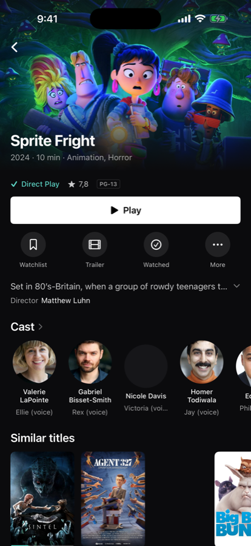
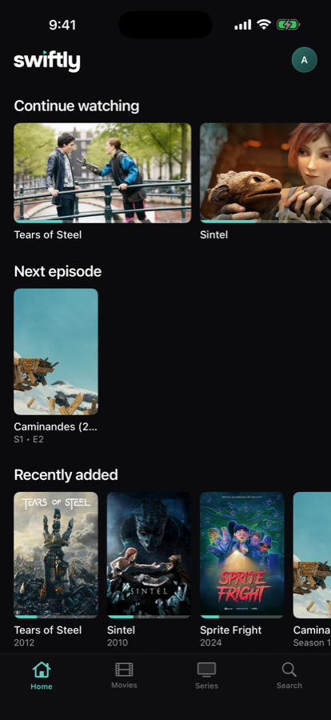
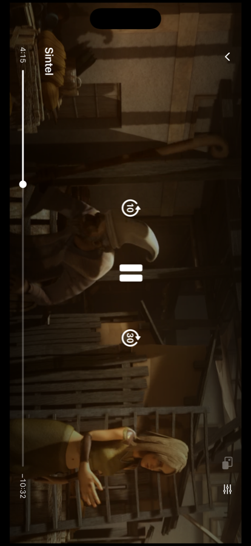

Jellyfin client · Apple · Windows · Linux
It opens, it finds your library, it plays.
Swiftly for Jellyfin is a native Jellyfin client for iPhone, iPad, Apple TV, Mac, Linux and Windows — one app, six platforms, and it never makes your server transcode.
Free, no account. Needs your own Jellyfin server, 10.10 or newer.


